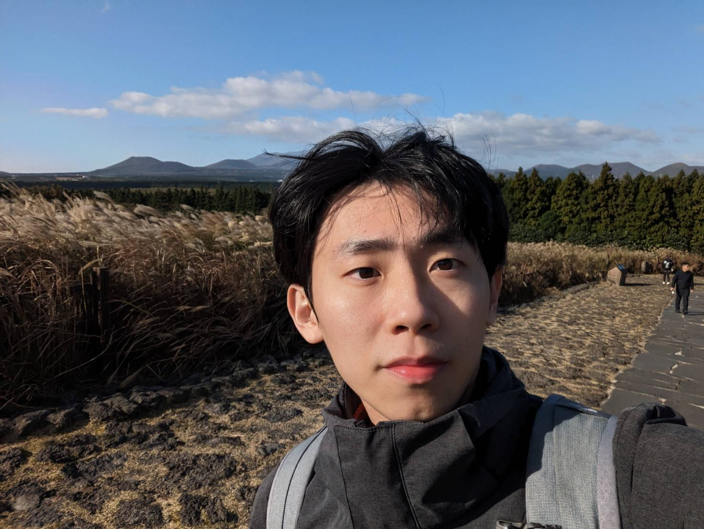

個人簡介
我是一位熱愛挑戰和追求卓越的嘉義人，出生於1997年，成長於一個家庭中，我們尊重並重視習慣的重要性。從小，我就培養了主動幫助家裡做家事的習慣。閱讀是我的興趣之一，因為我相信書籍像一個人的人生，可以從中獲得許多他人的經驗和智慧。我也熱愛旅遊和挑戰極限運動，這些活動豐富了我的視野，讓我對事物有更多不同的看法與見解。此外，我喜歡烹飪，我相信自己動手做出來的東西才是真正的學習與成長，很希望能夠加入
WeHelp，轉職成為網站工程師。

為了成為軟體工程師，做過什麼努力？若有具體作品請分享給我們。
決定轉換跑道成為一名軟體工程師後，儘管時間較短，我毫不猶豫地投入了大量的時間和精力。得知WeHelp舉辦第五屆課程後，我立即開始努力，確保自己具備必要的基本技能和知識。首先，我深入學習了網頁開發的基礎知識，包括HTML、CSS和JavaScript等。我不斷閱讀書籍，觀看Youtube的教學影片，積極吸收這些技術知識，並將它們應用到實際項目中。
除了學習基礎知識，我認為實踐也非常重要。雖目前僅建立靜態網頁尚未到開發動態Web應用程式，在看過WeHelp 的課程內容後覺得十分扎實，有助於增加自己的實作能力，並培養了我解決問題和優化代碼的能力。
如果參與這個訓練，會怎麼安排學習時間？
目前先以第一階段：網站開發基礎試做時間安排。
| 週一至週五 | |||
| 上午（9:00 - 12:00） | 中午（12:00 - 13:00） | 下午（13:00 - 16:00） | 下午（16:00 - 18:00） |
| 參與每週一早上 10:00 的線上會議，聽取當週的任務安排和關鍵技術指導，並準備撰寫進度報告。根據會議內容和任務安排，開始安排進行相關技術的實作和學習。 | 午餐休息，放鬆一下大腦。 | 自主學習 HTML、CSS、JavaScript 的基礎知識，通過線上基礎教學影片進行學習。 | 鞏固學習內容，實踐編程，完成相關練習和小型專案，特別是前端相關的 RWD 網頁切版及 JavaScript 的應用。 |
| 周末 | |||
| 上午（9:00 - 12:00） | 下午（13:00 - 16:00） | ||
| 復盤本周學習內容和任務安排，加強自身不足相關技術的實作和學習，並進行時間安排上的調整。 | 準備進度報告，整理本週的學習成果和任務完成情況。 | ||
其他注意事項
- 每日進度報告：每天晚上至少撰寫一次進度報告，記錄當天的學習內容、遇到的問題和解決方案，以及明天的計劃。
- 線上討論和提問：每週參與 Discord 社群平台的討論和提問，與其他學習者和導師交流心得和疑問。
- 實體活動：定期參與期末讀書報告活動和轉職經驗分享，透過線上直播參與。
- 進度查核：每週至少提供兩次每日進度報告，並在學期結束前完成所有任務，通過檢查後方可進入下一階段的訓練。
是否有想要加入的公司？為什麼想加入該公司？
我想加入的公司是:幣安，以下是我想加入的幾個原因。
- 技術挑戰性：Binance 是全球最大的加密貨幣交易平台之一，作為軟體工程師有機會參與開發和維護這樣一個高度複雜和高流量的系統，這將提供巨大的技術挑戰和成長機會。
- 團隊和文化：Binance 是一個充滿活力和創新精神的團隊，擁有多元化的文化和來自世界各地的人才。加入Binance不僅意味著加入一個頂尖的團隊，還意味著與全球最優秀的人才一起合作，共同實現共同的目標。
- 行業前景：加密貨幣和區塊鏈技術是當今最具前景的領域之一，而Binance作為這個行業的領導者，加入其團隊將能夠站在行業的前沿，參與並推動這個新興行業的發展。
- 影響力和貢獻：作為全球領先的加密貨幣交易平台，Binance 在全球擁有龐大的用戶基礎和影響力，加入Binance可以為更多的用戶提供更好的產品和服務，並對整個行業的發展做出貢獻。
- 專業發展：Binance 提供豐富的專業發展機會和學習資源，包括技術研討會、培訓課程和行業活動等。在這裡工作將有機會不斷學習和成長，不僅可以提升自己的技術能力，還能拓寬自己的視野，獲得更多的專業知識和經驗。
請描述一件產生明顯負面情緒的經歷，如何處理該情緒？
在前一份工作上，剛當上計劃經理的時候，因還不熟悉這個職位的工作內容，導致自己在開會的時候常常沒有辦法做到即時且正確的回應，雖自己知道那是因為跨出去新的一個階段，難免都會有撞牆期，也常常留下來自己加班，不希望造成別人的麻煩，也造成了自己心裡的負面情緒，但在後來慢慢地跟自己對話，覺得要適時地接受自己的不足，正因為自己的不足更要把他轉換成動力讓自己去努力，我認為面對負面情緒最重要的部分是去轉念，當然心煩的時候也會透過運動讓自己心理沉靜下來，然後再接這繼續想事情做時候，也能讓後續進行得更加順利。
關於這份申請網頁，分享一個開發時的技術心得。
起初我對於程式語言真的是一知半解，有些時候看一看還是搞不懂他的邏輯，但隨時一步一步地進行，最終完成自己網頁頁面的時候頗有成就感，甚至想要再去精進改善它，希望能讓人看起來排版更加流暢更加美觀，雖然以業內人士看起來可能只是一個簡易的網頁，但對我本身也是出發的一大步。
請用簡短兩三句話，描述對你而言，最重要的一項人際交往原則。
相互原則:維持自己的底線，尊重他人的想法，並保持著一定的同理心。
其他想要對我們說的事情？
在看了彭彭老師的教學影片，課程中的說明及實作都可以讓人快速地了解，也知道學習最大的占比是自我學習，而老師是為了讓我們學習的更快順利及扎實，我覺得wehelp團隊創造了一個良好的學習環境，才能一屆一屆的持續辦下去，希望自己能有這個機會加入這個訓練營與大家共同的去成長及學習。